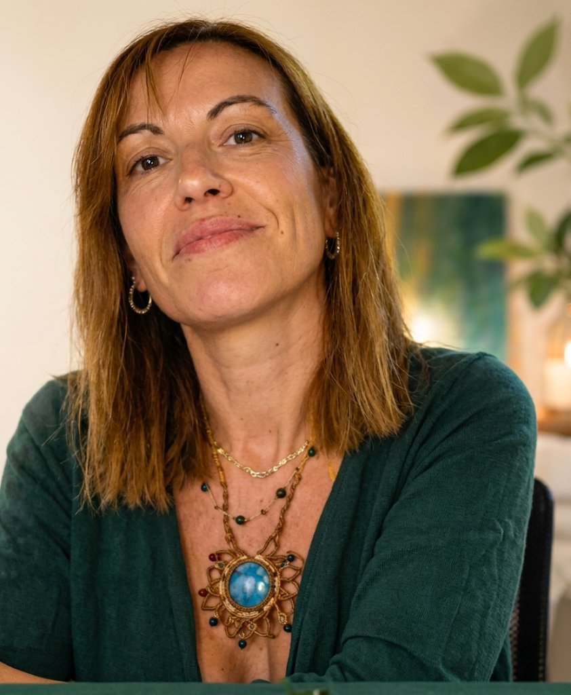

Un lavoro che integra psicologia del trauma, consapevolezza corporea e prospettiva transpersonale — senza mai ridurre la persona alla sua storia.
Il lavoro nasce dall'incontro tra rigore clinico e ampiezza di sguardo: comprendere come il trauma relazionale continua ad agire nel presente, e costruire, con metodo, le condizioni per una scelta reale — non solo per "stare meglio".
"Non si tratta di trascendere prematuramente il dolore, né di utilizzare la dimensione spirituale per allontanarsi dalle parti più difficili dell'esperienza." Dal blog di BloomRoom Lab — "Il trauma non è solo ciò che è accaduto"
Temi ricorrenti nel lavoro clinico, nella divulgazione e nei contenuti pubblicati.
Schemi ripetitivi, ipervigilanza, paura dell'abbandono, difficoltà a sentirsi al sicuro in relazione.
Dinamiche di abuso emotivo, dipendenza affettiva, narcisismo relazionale, uscita dalla confusione.
Il corpo come luogo di osservazione: riconoscere l'attivazione prima di esserne governati.
Significato, identità e trasformazione, oltre la sola remissione del sintomo.
Una comunità di oltre 7.000 persone segue il lavoro di divulgazione su trauma relazionale e crescita personale.
Metodo, percorsi disponibili e articoli del blog: tutto su bloomroomlab.com.
Vai al sito →